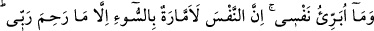
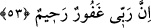

Allah Teâlâ’nın, yanında hazır ve kendisini gözetmekte olduğuna kesin olarak inanan
bir insan bütün çirkin davranışların, özellikle de hıyanetin menbaı olan nefse uyarak
O’nun huzurunda edebsizlik etmeye cür’et edemez.
Anlatılır ki çok güzel kokulu bir genç vardı. Kendisine: “Bu kadar güzel koku sana
epey pahalıya mâl oluyordur, herhalde.” denilince “Hayır, bu bir Allah vergisidir. Bir
kadın beni hîle yoluyla evine soktu ve nefsimden murâd almak istedi. Ben de
vücudumun her yanını ve elbisemi necâsete buladım. Bunu gören kadın delirdiğimi
zannederek beni serbest bıraktı. Allah da benim bu hareketime karşılık bana bu güzel
kokuyu bahşetti.”
İşte bu genç rüyasında Yûsuf (a.s.)’ı görmüş ve ona: “Ne mutlu sana, Allah seni azizin
karısının tuzağından kurtardı.” demiş. Yûsuf (a.s.) da ona şöyle karşılık vermiş: “Asıl
sana ne mutlu! Allah seni o kadının elinden kurtardı. Üstelik ben azizin karısına beşerî
tabîatım îcabı meylettiğim halde, sen bu kadar bile meyletmedin.”
Yûsuf (a.s.)’ın meyli beşerî tabîatı îcabı ortaya çıkan bir meyil olup bunun gereği olan
davranışlar meydana gelmemiştir. Allah’tan her iki cihanda bizi koruyup başarıya
ulaştırmasını niyaz ederiz.[52]
53. “(Bununla beraber) nefsimi temize çıkarmıyorum. Çünkü nefis aşırı şekilde
kötülüğü emreder, Rabbim acıyıp korumuş o başka. Şüphesiz Rabbim çok
bağışlayan, pek esirgeyendir.”
Bununla beraber “nefsimi temize çıkarmıyorum.” Yani nefsimin kötülükten uzak
olduğunu söylemediğim gibi tamamen suçsuz olduğuna şâhidlik etmiyorum. Bu söz de
Yûsuf (a.s.)’a âiddir. Bu sözü Allah’a karşı alçak gönüllülük etmek ve nefsini ezmek
için söylemiştir. Yoksa nefsini tezkiye etmek ve güvenilir bir kimse oluşunu beğenmek
için söylememiştir. Hz. Peygamber (s.a.)’in “Ben âdemoğullarının efendisiyim, ancak
övünmek yok.”[53] şeklindeki sözü de bu kabildendir.
Yûsuf (a.s.)’ın bu sözü kendisini koruyan ve başarılı kılan Allah’ın nimetini anmak
(tahdîs-i nimet) için söylediği de düşünülebilir. O zaman mânâ şöyle olur: Nefsimi,
bizzat nefis olması îtibariyle temize çıkarmıyorum. Bu fazîletli davranışı da Allah’ın
tevfîki olmaksızın sırf nefsimin tabîatının gereği olarak gösterdiğini de söylemiyorum.
“Çünkü nefis” yani, kendi nefsimin de aralarında bulunduğu bütün nefisler, “aşırı